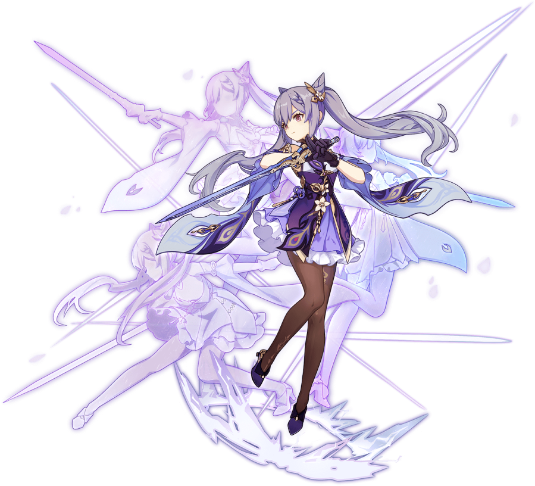

Información de confianza
Personaje Keching
Keching es un personaje jugable de Genshin Impact. Como el Equilibrio Terrenal de las Siete Estrellas de Liyue, es alguien que busca sus propias respuestas en lugar de dejar ociosamente dejar que el caos se vuelva loco en Liyue. Ella elige su propio camino con su propio poder y habilidad, en lugar de dejar que los dioses determinen su destino. Llegó por primera vez en la Versión 1.0 en el gachapón.
Mas inf...
